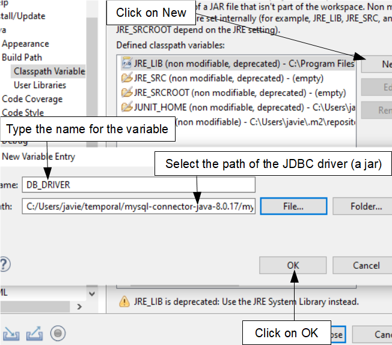
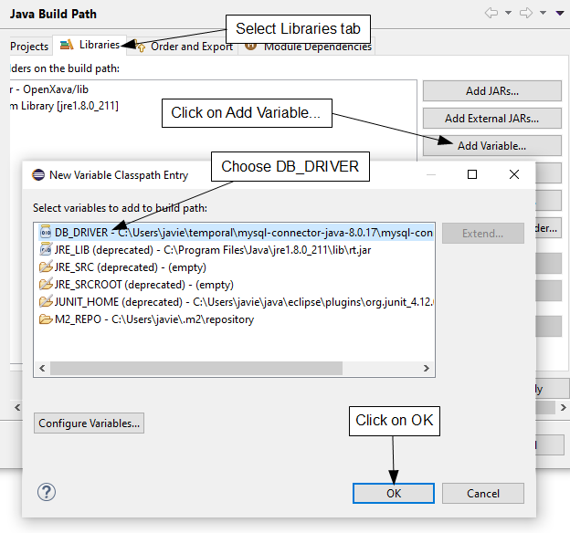

Configuration for Oracle
Configuring your OpenXava application to go against Oracle is very simple,
basically you have to install the JDBC driver for Oracle and define
correctly the datasource. You don't need to touch any code of your
application.
We assume you have already
installed and running Oracle.
Download the JDBC driver for Oracle
Download the Oracle driver from here: https://www.oracle.com/database/technologies/appdev/jdbc-downloads.html
Choose the database version you're using to go to the specific download
page. Then download the file
ojdbc8.jar, if you're using an old
Oracle version it could be
ojdbc7.jar or
ojdbc6.jar.
Create a classpath variable in Eclipse
In order you can connect to Oracle from Eclipse we're going to declare a
classpath variable that points to the Oracle JDBC driver, so you can use
it in any project you need easily. For that, in Eclipse go to Window
> Preferences > Java > Build Path > Classpath Variables
where you can add the new variable:

You can call the variable
ORACLE_DRIVER instead of DB_DRIVER if your prefer. The path is the path of
the JDBC driver, in our case the path of ojdbc8.jar we have just
downloaded.
Add the DB_DRIVER variable to your Eclipse project
In the project you're going to use Oracle you have to add the variable
declared above. Click with right mouse button on your project and then
choose Properties > Java Build Path > Libraries:

With this we have the driver
available for the development environment.
Add the JDBC driver to the production Tomcat
Adding
the driver in production is much easier. Copy ojdbc8.jar
to the lib folder of your Tomcat. Done.
Adjust your datasource definition
For development edit web/META-INF/context.xml of your Eclipse
project, and for production edit conf/context.xml of your Tomcat
to adjust the datasource to point to Oracle, something like this:
<Resource name="jdbc/MyAppDS" auth="Container"
type="javax.sql.DataSource"
maxTotal="100" maxIdle="20" maxWaitMillis="10000"
username="root" password="ao49fmsk"
driverClassName="oracle.jdbc.OracleDriver"
url="jdbc:oracle:thin:@localhost:1521:mysid"/>
The differences are the driverClassName
and the url. The final part of the url, mysid in
this example, is the sid of your Oracle database. Obviously, instead of localhost
you should put the address of the server that hosts Oracle, and also put
the correct username and password.
Update persistence.xml
You don't need to touch the
default persistence unit of
persistence.xml
(in
persistence/META-INF), unless you use
hibernate.dialect
property in which case just remove
hibernate.dialect property.
However, you have to modify the
junit persistence unit to point to
Oracle.
<!-- JUnit Oracle -->
<persistence-unit name="junit">
<provider>org.hibernate.jpa.HibernatePersistenceProvider</provider>
<class>org.openxava.web.editors.DiscussionComment</class>
<properties>
<property name="hibernate.connection.driver_class" value="oracle.jdbc.OracleDriver"/>
<property name="hibernate.connection.username" value="root"/>
<property name="hibernate.connection.password" value="ao49fmsk"/>
<property name="hibernate.connection.url" value="jdbc:oracle:thin:@localhost:1521:mysid"/>
</properties>
</persistence-unit>
Adapt the username, password
and url to your Oracle configuration.